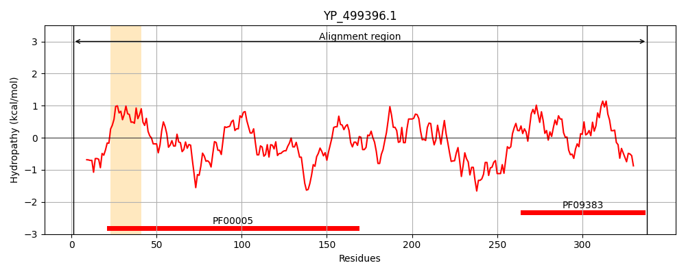
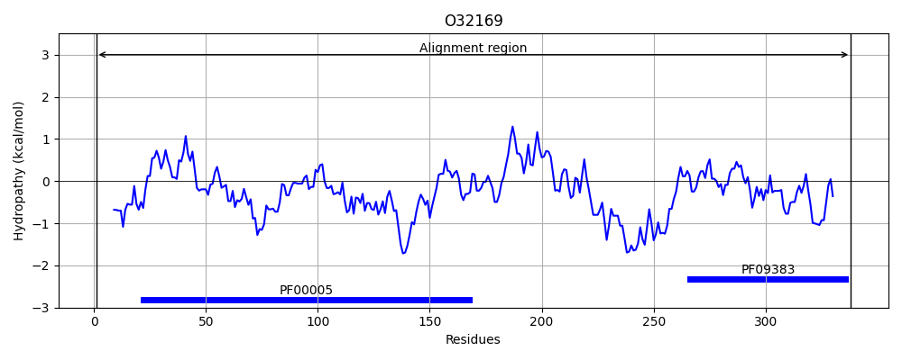
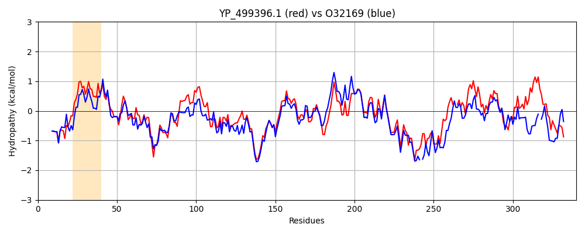

Hit Accession: O32169
Hit TCID: 3.A.1.24.2
Hit Description: gnl|BL_ORD_ID|7094 gnl|TC-DB|O32169|3.A.1.24.2 MetN protein - Bacillus subtilis subsp. subtilis str. 168.
Mach Len: 340
e:0.000000
Query TMS Count : 1
Hit TMS Count: 0
TMS-Overlap Score: 0.000000
Predicted Substrates:CHEBI:45761;L-methionine (R)-S-oxide residue, CHEBI:6829;methionine
BLAST Alignment:
Score: 898 , Bit scores: 350 bits, E-value: 1.6e-120, Alignment length: 340, Percentage identity: 54
Query: 1 MIELKEVVKEYRTKNKEVLAVDHVNLSIRAGSIYGVIGFSGAGKSTLIRMFNHLEAPTSGEVIIDGDHIGQLSKNGLRAKRQKVSMIFQHFNLLWSRTVLKNIMFPLEIAGVPRRRAKQKALELVELVGLKGREKAYPSELSGGQKQRVGIARALANDPTVLLCDEATSALDPQTTDEILDLLLKIREQQNLTIVLITHEMHVIRRICDEVAVMESGKVIEQGPVTQVFENPQHTVTKRFVKDDLNDDFETSLTELEPLEKDA--YIVRLVFAGSTTTEPIVSSLSTAYDIKINILEANIKNTKNGTVGFLVLHIPYISSVDFGKFEKELIERQVKMEVL 338
MI L++V K Y++K+ +V AV +V+LSI+ G I+G+IG+SGAGKS+LIR+ N LE PTSG V + G I +++ GLR R ++SMIFQHFNLLWSRTV NIMFPLEIAGV + ++A EL++LVGL+G+EK+YPS+LSGGQKQRVGIARALAN+P VLLCDEATSALDPQTTD ILDLL I E+ LTIVLITHEMHVIR+IC+ VAVME+GKV+E+G V VF+NP+ +TKRFV+ + + ET T L+ A +V+L F G + +P+++ + +++ +NIL+ I TK+G G L +HI + + + ++QVK EV+
Sbjct: 1 MINLQDVSKVYKSKHGDVNAVQNVSLSIKKGEIFGIIGYSGAGKSSLIRLLNGLEKPTSGTVEVAGTKINEVNGRGLRKARHEISMIFQHFNLLWSRTVRDNIMFPLEIAGVKKSERIKRANELIKLVGLEGKEKSYPSQLSGGQKQRVGIARALANNPKVLLCDEATSALDPQTTDSILDLLSDINERLGLTIVLITHEMHVIRKICNRVAVMENGKVVEEGEVLDVFKNPKEQMTKRFVQ-QVTEPEETKETLQHLLDDTASGKMVQLTFVGESAEQPLITEMIRNFNVSVNILQGKISQTKDGAYGSLFIHIDG-DEEEVQNVIRFINDKQVKAEVI 338 | Protein Hydropathy Plots: |
|---|
|  |  |
Pairwise Alignment-Hydropathy Plot:
|
|---|
|  |